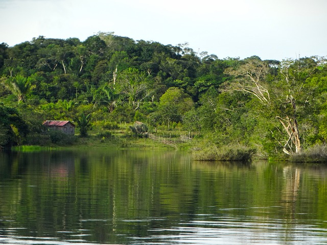
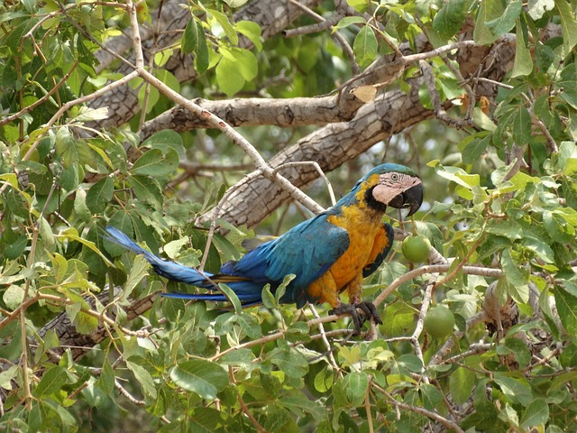
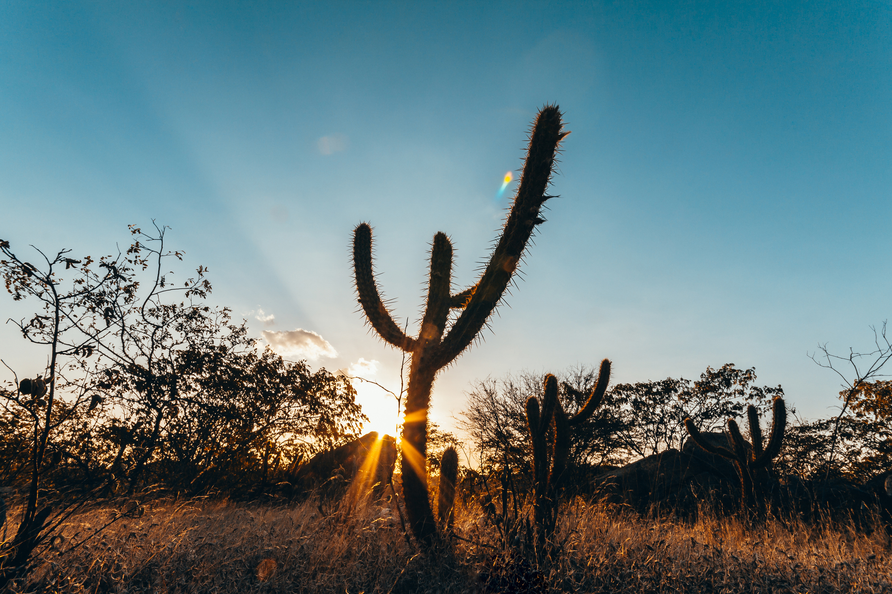
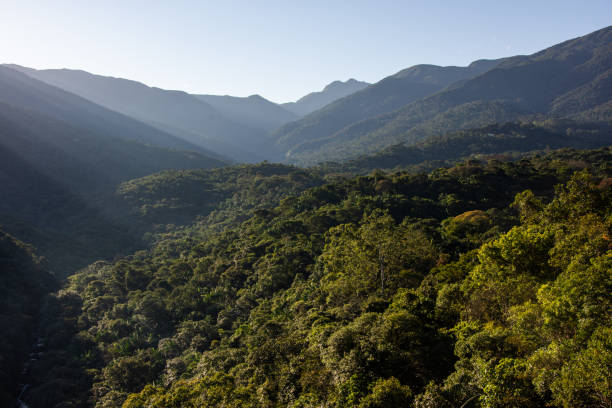
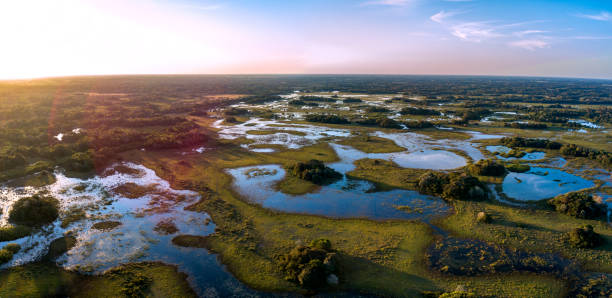
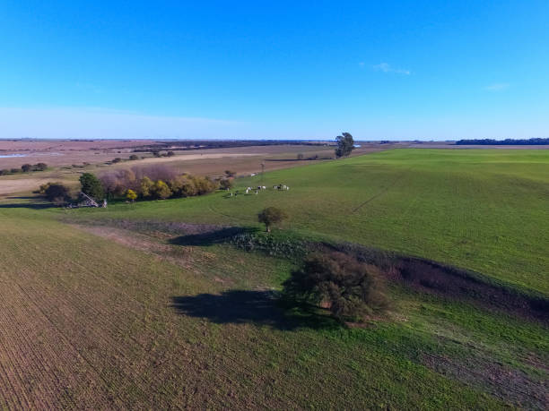

A Amazônia é o maior bioma brasileiro e abriga a maior floresta tropical do mundo. É conhecida por sua biodiversidade extraordinária, com uma infinidade de espécies de plantas e animais. Além disso, desempenha um papel vital na regulação do clima global, produção de oxigênio e abrigo de comunidades indígenas.
O Cerrado é o segundo maior bioma do Brasil e é caracterizado por uma paisagem de savana, com árvores baixas, gramíneas e uma rica biodiversidade. É conhecido como a "savana mais rica em biodiversidade do mundo" devido à sua variedade de espécies de plantas e animais, muitos dos quais são endêmicos da região.
A Caatinga é um bioma semiárido, predominantemente composto por arbustos e árvores resistentes à seca. É uma região de clima quente e seco, com vegetação adaptada às condições áridas. Abriga uma rica diversidade de espécies adaptadas à escassez de água, incluindo cactos e plantas xerófitas.
A Mata Atlântica é um bioma costeiro que se estende desde o nordeste até o sul do Brasil. É caracterizada por sua diversidade de florestas tropicais, manguezais e restingas. Apesar de ser um dos biomas mais ameaçados do país devido à urbanização e à atividade humana, ainda abriga uma variedade impressionante de espécies vegetais e animais.
O Pantanal é a maior área úmida do mundo e está localizado principalmente no estado de Mato Grosso do Sul. É uma planície alagada sazonalmente, com uma rica diversidade de vida selvagem, incluindo jacarés, capivaras, aves migratórias e onças-pintadas. É considerado um dos ecossistemas mais preservados do Brasil.
O Pampa é um bioma de campos que se estende pelos estados do sul do Brasil, Argentina e Uruguai. Caracteriza-se por vastas áreas de gramíneas e pequenos bosques. É uma região de criação de gado e possui uma paisagem única no Brasil.
